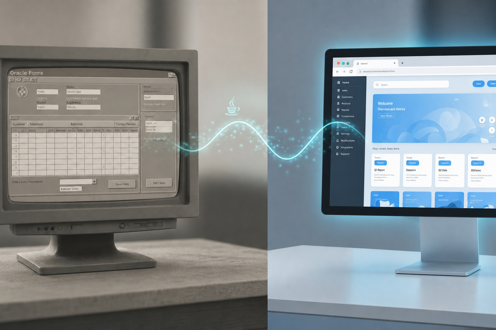

01
Costo por complejidad
El valor se calcula según el nivel de complejidad de cada Form (pantallas simples, flujos con PL/SQL denso, integraciones, reportes, etc.).
Servicio propietario CastleXpert
Ejecutamos la modernización de sistemas Oracle Forms 6i, 9i, 10g, 11g, 12c y 14c hacia una plataforma web responsive con React, Vite, Node.js y API REST — manteniendo Oracle Database cuando aplica. Es un servicio de migración entregado por nuestro equipo.

Partimos del sistema actual, hacemos una evaluación técnica profunda y construimos la arquitectura moderna sobre su Oracle Database, con frontend y API separados.
Evitamos el enfoque “big bang”: migramos por olas, con entregas que usted puede probar mientras el resto del sistema sigue operando.
Alineación React + Node.js con flujo de API estructurado, contratos compartidos y herramientas comunes — adaptada a una migración desde Oracle Developer.
Flujo de API estructurado + herramientas y contratos compartidos. En migraciones Oracle, la base puede permanecer en Oracle Database conectada por API REST.
Ofrecemos un análisis previo para decidir con datos: qué migrar, en qué orden y con qué esfuerzo estimado — antes de iniciar la construcción.
Transparente, medible y alineado a la realidad de cada Form.
El valor se calcula según el nivel de complejidad de cada Form (pantallas simples, flujos con PL/SQL denso, integraciones, reportes, etc.).
Liberamos avances por etapas para que su operación pruebe la migración real.
Al cerrar cada entrega, usted recibe los fuentes de lo desarrollado: frontend React/Vite y servicios Node.js / API REST correspondientes.
Analizamos su inventario Oracle Developer y le devolvemos una propuesta concreta: arquitectura, fases, riesgos y estimación por complejidad — para que CastleXpert ejecute la migración y le entregue los códigos fuente.
Solicitar evaluaciónCastleXpert · Migración Oracle Developer → web moderna